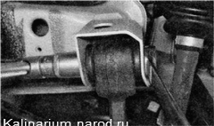
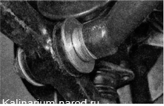
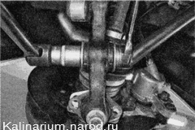
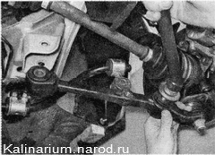

Поперечный рычаг подвески - снятие и установкаДля выполнения работы потребуется: — смотровая канава или эстакада; — бородок. Снятие 1. Подготавливаем автомобиль к выполнению работы. 2. Снимаем переднее колесо. 3. Снимаем брызговик двигателя. 4. Отворачиваем два болта крепления шаровой опоры к поворотному кулаку. Выполняя следующую операцию, соблюдайте осторожность, так как стабилизатор находится в напряженном состоянии. 5. Вынимаем болт крепления стойки стабилизатора к рычагу. 6. Двумя ключами на 19 мм отворачиваем гайку болта крепления поперечного рычага к кронштейну кузова и вынимаем болт. 
7. Чтобы при установке рычага минимизировать нарушение регулировки угла продольного наклона оси поворота, подсчитайте и запишите количество регулировочных шайб, находящихся на заднем конце продольной растяжки.  8. Удерживая растяжку от проворачивания рожковым ключом на 24 мм, торцовым ключом того же размера с длинным воротком отворачиваем гайку заднего конца растяжки. 9. Снимаем с заднего конца продольной растяжки упорную шайбу. 10. Снимаем нижний рычаг в сборе с шаровой опорой с продольной растяжки. 11. Чтобы не потерять, снимаем с растяжки упорную и регулировочные шайбы. 12. При необходимости зажимаем рычаг в тисках и выпрессовываем из него палеи шаровой опоры. Установка Устанавливаем рычаг в обратной последовательности. При установке регулировочной шайбы необходимо, чтобы фаска на ее внутренней кромке была обращена к растяжке. Окончательно затягивайте гайки крепления резинометаллических шарниров только после установки автомобиля на колеса. |